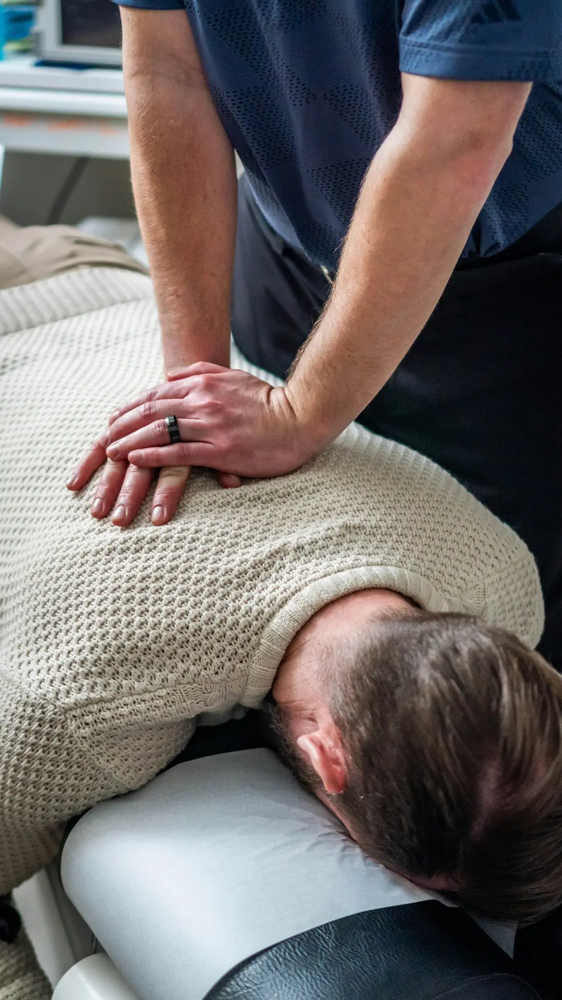
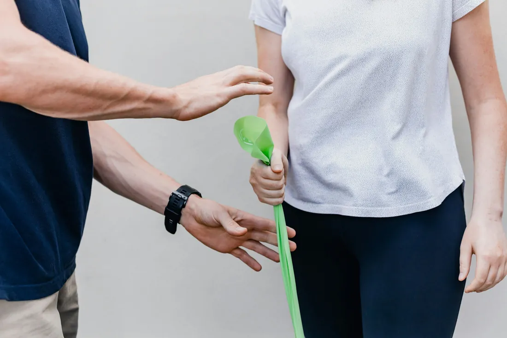
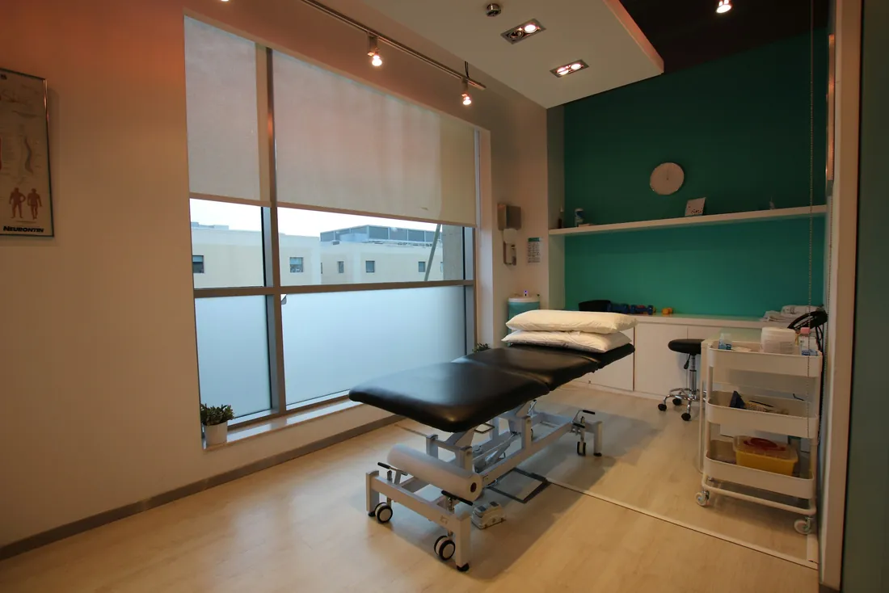

Ból kręgosłupa i karku
Ból w dolnej części pleców, sztywny kark, drętwienie rąk, bóle głowy związane z napięciem mięśni.
Wizyty umawiane telefonicznie
mgr Marta Halicka, fizjoterapeutka. Terapia manualna, rehabilitacja po kontuzjach w górach i po operacjach, ból kręgosłupa.
Gabinet w Jeleniej Górze. Każda wizyta to 50 minut pracy jeden na jeden, bez pośpiechu i bez kolejki.

O mnie
Jestem fizjoterapeutką od 10 lat. Pracuję z osobami po urazach, po operacjach i z tymi, które od miesięcy budzą się z bólem karku albo pleców.
Ból kolana często zaczyna się w biodrze, a ból karku w sposobie, w jaki siedzimy przy biurku. Dlatego na pierwszej wizycie sprawdzam, jak porusza się całe ciało, a dopiero potem zaczynam terapię.
Sama biegam po karkonoskich szlakach, więc dobrze rozumiem, jak bardzo chce się wrócić na trasę po kontuzji.
Terapia manualna
Kurs zaawansowany, praca z kręgosłupem i stawami
Fizjoterapia sportowa
Biegacze, narciarze, wspinacze i rowerzyści
mgr fizjoterapii
Prawo wykonywania zawodu nr 000000
W czym pomagam
Na wizytę nie potrzeba skierowania. Jeśli nie wiesz, czy to problem dla fizjoterapeuty, zadzwoń. Powiem szczerze, czy mogę pomóc.
Ból w dolnej części pleców, sztywny kark, drętwienie rąk, bóle głowy związane z napięciem mięśni.
Barki, które bolą pod koniec dnia, napięte biodra i plecy po ośmiu godzinach przy komputerze.
Po rekonstrukcji więzadła krzyżowego, artroskopii, złamaniach i wymianie stawu. Plan powrotu do sprawności krok po kroku.
Skręcony staw skokowy, ból kolana biegacza, naderwane mięśnie, przeciążone ścięgna.
Dla aktywnych w Karkonoszach
Pracuję z biegaczami górskimi, narciarzami i turystami. Wspólnie ustalamy, co można robić już teraz, żeby szybciej i bezpiecznie wrócić na trasę.
Zadzwoń: 75 000 00 01Cennik
Płacisz za wizytę, nie za pakiet. Płatność gotówką, kartą albo BLIK-iem.
50 minut · kręgosłup, stawy, napięcia mięśniowe
50 minut · terapia i ćwiczenia według etapu leczenia
50 minut · rozluźnienie przeciążonych mięśni
40 zł jako dodatek do wizyty, 60 zł jako osobna wizyta
Termin można bezpłatnie przełożyć lub odwołać do 24 godzin przed wizytą.
Pierwsza wizyta
Zabierz wygodny strój i wyniki badań, jeśli je masz: RTG, rezonans, wypis ze szpitala.
Rozmawiamy o tym, co boli, od kiedy i kiedy się nasila. Sprawdzam zakres ruchu, siłę i sposób poruszania się.
Pracuję z miejscem, które jest przyczyną problemu. Mówię, co robię i dlaczego, a tempo dopasowuję do Ciebie.
Dostajesz 2–3 proste ćwiczenia, które zajmują kilka minut dziennie. Od nich w dużej mierze zależy efekt.

Opinie pacjentów
4,9 86 opinii
„Po skręceniu kostki na zejściu ze Śnieżki myślałam, że sezon mam z głowy. Po pięciu wizytach wróciłam do biegania, a ćwiczenia robię do dziś.”
„Konkretnie i bez lania wody. Pani Marta wytłumaczyła mi, skąd się bierze ból pleców, i pierwszy raz od dawna śpię całą noc.”
„Rehabilitacja po rekonstrukcji więzadła. Każdy etap był zaplanowany, wiedziałam, co i po co robimy. Polecam z całego serca.”
„Pracuję przy komputerze i kark bolał mnie codziennie. Trzy wizyty i kilka ćwiczeń zrobiły więcej niż rok tabletek.”
„Spokojna atmosfera, punktualnie i z pełnym skupieniem na pacjencie. Trafiłam tu z bólem biodra po ciąży i dopiero tutaj ktoś dokładnie sprawdził, skąd on się bierze.”
Kontakt i dojazd
Najszybciej telefonicznie. Jeśli nie odbieram, jestem z pacjentem. Oddzwonię po wizycie.
Strona przykładowa: mapa pokazuje ogólnie centrum Jeleniej Góry. W prawdziwej wersji z dokładnym punktem i przyciskiem „Wyznacz trasę”.

Strona przykładowa
Dla jednoosobowego gabinetu, specjalisty albo rzemieślnika, który chce, żeby klient znalazł go w internecie i od razu zadzwonił.
1 490 zł jednorazowo
strona i rok utrzymania
albo 129 zł miesięcznie
abonament bez opłaty na start
Wszystkie dane na tej stronie (osoba, adres, telefon, opinie) są wymyślone i służą tylko do pokazania, jak może wyglądać Pana/Pani strona.